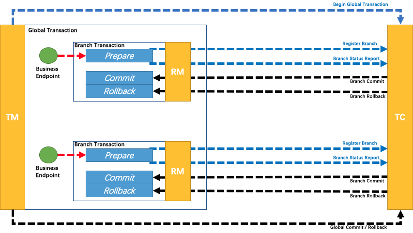

文档
文档
- Seata
Seata TCC 模式
回顾总览中的描述：一个分布式的全局事务，整体是 两阶段提交 的模型。全局事务是由若干分支事务组成的，分支事务要满足 两阶段提交 的模型要求，即需要每个分支事务都具备自己的：
- 一阶段 prepare 行为
- 二阶段 commit 或 rollback 行为

根据两阶段行为模式的不同，我们将分支事务划分为 Automatic (Branch) Transaction Mode 和 TCC (Branch) Transaction Mode.
AT 模式（参考链接 TBD）基于 支持本地 ACID 事务 的 关系型数据库：
- 一阶段 prepare 行为：在本地事务中，一并提交业务数据更新和相应回滚日志记录。
- 二阶段 commit 行为：马上成功结束，自动 异步批量清理回滚日志。
- 二阶段 rollback 行为：通过回滚日志，自动 生成补偿操作，完成数据回滚。
相应的，TCC 模式，不依赖于底层数据资源的事务支持：
- 一阶段 prepare 行为：调用 自定义 的 prepare 逻辑。
- 二阶段 commit 行为：调用 自定义 的 commit 逻辑。
- 二阶段 rollback 行为：调用 自定义 的 rollback 逻辑。
所谓 TCC 模式，是指支持把 自定义 的分支事务纳入到全局事务的管理中。